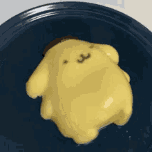

Lab 3 File Structures & file transfer
Challenges
Hi, this is Precious the APGM student, and my partner is Miki Foster the linguistic student. We both like chiikawa and think the lab instructions were confusing. Today's challenge is learning how to file structure and file transfer for our lab 3. And we need to use what we learned from HTML to create a well structred document. We both need to follow 7 task to get this assignment done.
Problems
I think a problem my partner and I had to deal with was trying to understand how to follow the task. This is because we had our own interpreation about it. I had a hard time trying to fix the bulleted list to link my labs. My brain was going in scrmbles last night, but anyway I think you wanted us to teachinaclly make our webiste on lab3/index.htm? Or with our homepage just add the lab links and for lab 3 just fill out the questions? I am probably overthinking this whole lab lol-
Reflection
For this assignmnet, My partner and I thought it was pretty easy to do (CSS) (Img) wise, but the instructions seem hard to follow cause I was working on this last night. I was probably sleep deprived or something. I put alot of effort since I stayed up tryng to figure out what to do for the assigmmnet. So I have been fixing some errors on my part. I need to refix my orginal homepage for introductions. And then do the questionare for lab 3. I had to dedicate many hours into orginizing my labs and pages.
Results
I think so far I did what I could. I think the website is close enough to what the lab was asking for. It looks decent! Yippie! We tried! also this page is sakura themed- hope you like it!